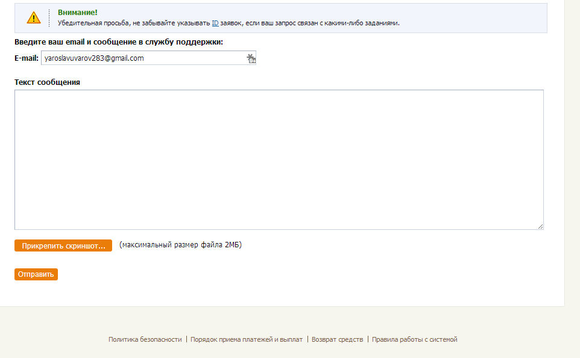
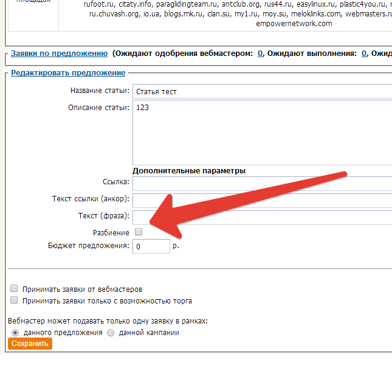
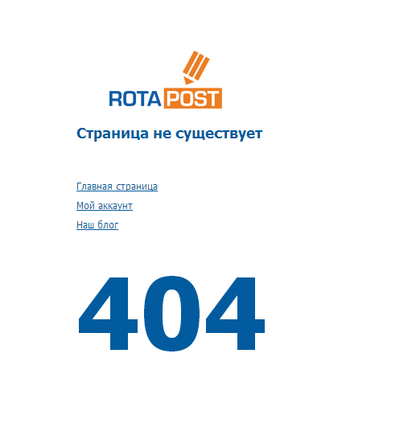
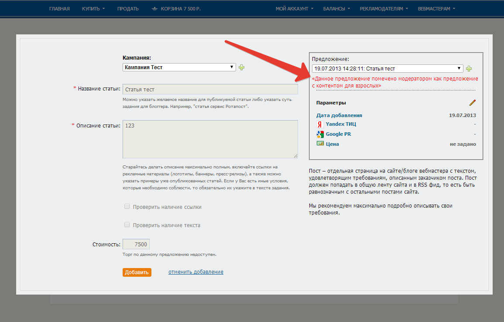
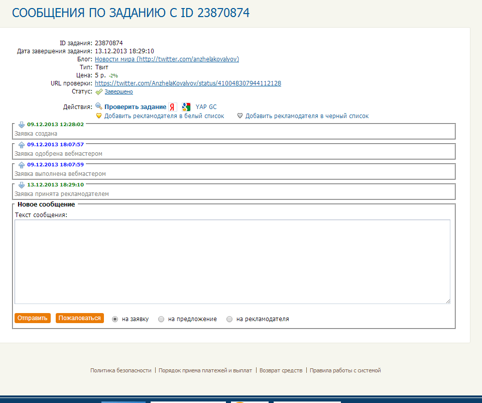
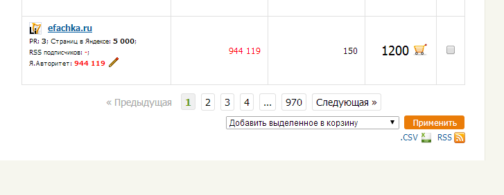
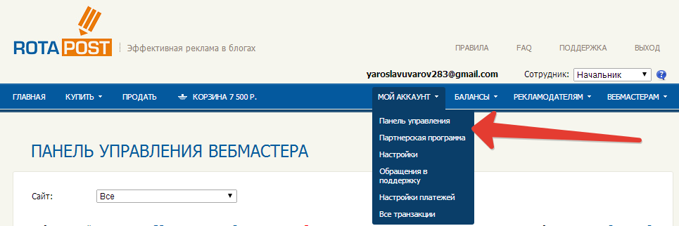

Не отклонялись задания
Из панели управления
Бесконечно долго выполнялись/проверялись задания
Из-за некорректного подсчета внешних ссылок при проверке задания
Неясности по прикреплению файлов

Дубликаты блогов в "Купить"
Только по тем юзерам, у которых были ошибки после гарантии
Неработающий пейджер в "Моих кампаниях"
Переход со страницы на страницу был невозможен
Неработающее массовое добавление блоггеров в черный список
Из панели управления
Корзина - "купить выделенные"
А покупалось все
Корзина - добавление задания не работало
Если не было ни одной кампании у пользователя
Не показывались ошибки после гарантии в "Продать"
Путаница в блоках
Корзина и Firefox
Опции докупки невозможно было выбрать правильно
Продать - дублировались предложения
Для тех, у кого есть ошибки после гарантии
Добавление сайта висло
Если не удалось получить ТИЦ
Редактирование типа разбиения текста

Страницы ошибок

Без редиректов!
Несколько страниц одновременно!
Одна тяжелая страница не блокирует загрузку остальных
Предложения для взрослых в Корзине

Последнее состояние заявки

Новый пейджер в "Купить"

Маркер фильтра в панели управления

Твит - текст, ссылка
Новый порядок
Никаких стрелочек в пунктах меню!

Мои сайты - быстро!
Для владельцев > 200 площадок
Все транзакции
Заблокированные средства по заказам на редактирование